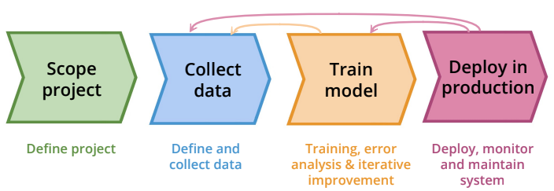
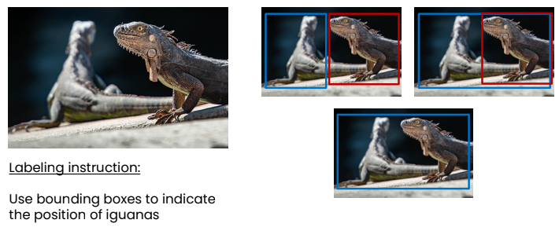

Notes: Required questions - theory Kirenz¶
Data-centric AI¶
Notes on the video of AI pioneer Andrew Ng:”A Chat with Andrew on MLOps: From Model-centric to Data-centric AI”.
AI-System = Code (model/algorithm) + Data
Data is food for AI

It’s very important especially for small data sets that the labels are consistencly

Noisy Dataset: data that contains a large amount of additional meaningless information. E.g. corrupted data…all data that cannot be understood and interpreted by a user system.
Noisy labels: labels that were set incorrectly or inconsitently
Theory: Clean vs. noisy Data
You have 500 Examples and 12% of the examples are noisy (incorrectly or inconsitently labeld)The following are about equally effective: - Clean up the noise => 60 examples - Collect annother 500 new examples (double the training set)
With a data centric view, there is significant of room for improvment in problems <10.000 examples
Required questions
Describe the lifecycle of an ML project

Collect data Define and collect the data. It’s important that the data is labeled consistently.

All 3 options are fine, but we should label the whole dataset in one way. For example…we label all the data as in the first picture
Ho can we make data quality systematic in MLOps?
Ask two independent labelers to label a sample of images
Measure consistency between labelers to discover where they disagree
For clases where the labelers disagree, revise the labeling instruction until they become consistent
Train model It’s important that after ech training we analyze what the error was.
Making it systemtic - iteratively improving the data (Data-centric view)
Train a model
Error the analysis to identify the types of data the algorithm does poorly on (e.g. speech with car noise). Example: Speech with car nois in background. If that’s the problem, we should collect more data with speech in background.Not just add 5000 more data, but specifically data with speech and car noise in the background –> Model can be significantly improved by selectively adding datan
Either get more of that data via data augmentation, data generation or data collection (change inputs x) or give more consistent definition for labels if they were found to be ambiguous (change labels y)
What is the difference between a model-centric vs data-centric view
Model-centric view
Collect what data you can, and develop a model good enough to deal with the noise in the data.Hold the data fixed and iteratively improve the code/model.
Data-centric view
The consistency of the data is paramount. Use tools to improve the data quality; this will allow multiple models to do well.Hold the code fixed and iteratively improve the data..
Describe MLOps’ most important task
Ensure consistently high-quality data in all phases oft he ML project lifecycle
What is good Data?Defined consistently (definition of labels y is unambiguous)
Cover of important cases (good coverage of inputs x)
Enough data – for example enough data of speech with car noise in background
Has timely feedback from production data (distribution covers data drift and concept drift)
Sized appropriately
Components¶
Next, you’ll get an overview about some of the primary components of MLOps. “An introduction to MLOps on Google Cloud” by Nate Keating:
Required questions
Describe the challenges of current ML systems (where are teams today)?
What are the components of the ML solution lifecycle?
Explain the steps in an automated E2E pipeline.
Framework¶
Required questions
Describe the difference betweeen DevOps versus MLOps
DevOps is a popular practice in developing and operating large-scale software systems. This practice provides benefits such as shortening the development cycles, increasing deployment velocity, and dependable releases. To achieve these benefits, you introduce two concepts in the software system development: - Continuous Integration (CI) - Continuous Delivery (CD)An ML system is a software system, so similar practices apply to help guarantee that you can reliably build and operate ML systems at scale. However, ML systems differ from other software systems in the following ways:** - Team skills : In an ML project, the team usually includes data scientists or ML researchers, who focus on exploratory data analysis, model development, and experimentation. These members might not be experienced software engineers who can build production-class services. - Development: ML is experimental in nature. You should try different features, algorithms, modeling techniques, and parameter configurations to find what works best for the problem as quickly as possible. The challenge is tracking what worked and what didn’t, and maintaining reproducibility while maximizing code reusability.* - Testing: Testing an ML system is more involved than testing other software systems. In addition to typical unit and integration tests, you need data validation, trained model quality evaluation, and model validation. - Deployment: In ML systems, deployment isn’t as simple as deploying an offline-trained ML model as a prediction service. ML systems can require you to deploy a multi-step pipeline to automatically retrain and deploy model. This pipeline adds complexity and requires you to automate steps that are manually done before deployment by data scientists to train and validate new models. - Production: ML models can have reduced performance not only due to suboptimal coding, but also due to constantly evolving data profiles. In other words, models can decay in more ways than conventional software systems, and you need to consider this degradation. Therefore, you need to track summary statistics of your data and monitor the online performance of your model to send notifications or roll back when values deviate from your expectations.
ML and other software systems are similar in continuous integration of source control, unit testing, integration testing, and continuous delivery of the software module or the package. However, in ML, there are a few notable differences: - CI is no longer only about testing and validating code and components, but also testing and validating data, data schemas, and models. - CD is no longer about a single software package or a service, but a system (an ML training pipeline) that should automatically deploy another service (model prediction service). - CT is a new property, unique to ML systems, that’s concerned with automatically retraining and serving the models
Name and explain the steps for developing ML models
Data extraction: You select and integrate the relevant data from various data sources for the ML task.
Data analysis: You perform exploratory data analysis (EDA) to understand the available data for building the ML model. This process leads to the following:
Understanding the data schema and characteristics that are expected by the model.
Identifying the data preparation and feature engineering that are needed for the model.
Data preparation: The data is prepared for the ML task. This preparation involves data cleaning, where you split the data into training, validation, and test sets. You also apply data transformations and feature engineering to the model that solves the target task. The output of this step are the data splits in the prepared format.
Model training: The data scientist implements different algorithms with the prepared data to train various ML models. In addition, you subject the implemented algorithms to hyperparameter tuning to get the best performing ML model. The output of this step is a trained model.
Model evaluation: The model is evaluated on a holdout test set to evaluate the model quality. The output of this step is a set of metrics to assess the quality of the model.
Model validation: The model is confirmed to be adequate for deployment—that its predictive performance is better than a certain baseline.
Model serving: The validated model is deployed to a target environment to serve predictions. This deployment can be one of the following:
Microservices with a REST API to serve online predictions.
An embedded model to an edge or mobile device.
Part of a batch prediction system.
Model monitoring: The model predictive performance is monitored to potentially invoke a new iteration in the ML process.
Explain the steps in an automated E2E pipeline.
Data and model validation: Data validation: This step is required before model training to decide whether you should retrain the model or stop the execution of the pipeline. This decision is automatically made if the following was identified by the pipeline:
Data schema skews
Data values skews
Model validation: This step occurs after you successfully train the model given the new data. You evaluate and validate the model before it’s promoted to production. :
Dataset and feature repository:
Feature store: An optional additional component for level 1 ML pipeline automation is a feature store. A feature store is a centralized repository where you standardize the definition, storage, and access of features for training and serving. A feature store needs to provide an API for both high-throughput batch serving and low-latency real-time serving for the feature values, and to support both training and serving workloads.
The feature store helps data scientists do the following:
Discover and reuse available feature sets for their entities, instead of re-creating the same or similar ones.
Avoid having similar features that have different definitions by maintaining features and their related metadata.
Serve up-to-date feature values from the feature store.
Avoid training-serving skew by using the feature store as the data source for experimentation, continuous training, and online serving. This approach makes sure that the features used for training are the same ones used during serving:
For experimentation, data scientists can get an offline extract from the feature store to run their experiments.
For continuous training, the automated ML training pipeline can fetch a batch of the up-to-date feature values of the dataset that are used for the training task.
For online prediction, the prediction service can fetch in a batch of the feature values related to the requested entity, such as customer demographic features, product features, and current session aggregation features.
Metadata management:
Information about each execution of the ML pipeline is recorded in order to help with data and artifacts lineage, reproducibility, and comparisons. It also helps you debug errors and anomalies. Each time you execute the pipeline, the ML metadata store records the following metadata:
The pipeline and component versions that were executed.
The start and end date, time, and how long the pipeline took to complete each of the steps.
The executor of the pipeline.
The parameter arguments that were passed to the pipeline.
The pointers to the artifacts produced by each step of the pipeline, such as the location of prepared data, validation anomalies, computed statistics, and extracted vocabulary from the categorical features. Tracking these intermediate outputs helps you resume the pipeline from the most recent step if the pipeline stopped due to a failed step, without having to re-execute the steps that have already completed.
A pointer to the previous trained model if you need to roll back to a previous model version or if you need to produce evaluation metrics for a previous model version when the pipeline is given new test data during the model validation step.
The model evaluation metrics produced during the model evaluation step for both the training and the testing sets. These metrics help you compare the performance of a newly trained model to the recorded performance of the previous model during the model validation step.
ML pipeline triggers:
You can automate the ML production pipelines to retrain the models with new data, depending on your use case:
On demand: Ad-hoc manual execution of the pipeline.
On a schedule: New, labelled data is systematically available for the ML system on a daily, weekly, or monthly basis. The retraining frequency also depends on how frequently the data patterns change, and how expensive it is to retrain your models.
On availability of new training data: New data isn’t systematically available for the ML system and instead is available on an ad-hoc basis when new data is collected and made available in the source databases.
On model performance degradation: The model is retrained when there is noticeable performance degradation.
On significant changes in the data distributions (concept drift). It’s hard to assess the complete performance of the online model, but you notice significant changes on the data distributions of the features that are used to perform the prediction. These changes suggest that your model has gone stale, and that needs to be retrained on fresh data.
Continuous training: The continuous training process is about orchestrating and automating the execution of training pipelines. How frequently you retrain your model depends on your use case and on the business value and cost of doing so. For example, if you are using an ML model that performs well in classifying images, and if there are no changes in the environment in which the images are generated and collected, there might be little benefit in retraining the model on new data every day. On the other hand, if you run a shopping site that has a recommendation system, user behavior changes continually, and retraining frequently on new data captures new trends and patterns. This investment in retraining can lead to higher click-through rates and therefore potential additional purchases. Each run of the pipeline can be triggered in several ways, including the following: • Scheduled runs based on jobs that you configure. • Event-driven runs, such as when new data becomes available above a certain threshold, or when model de-cay is detected by the continuous monitoring process. • Ad hoc runs based on manual invocation.
Model deployment: After a model has been trained, validated, and added to the model registry, it is ready for deployment. During the model deployment process, the model is packaged, tested, and deployed to a target serving environment. As with the training operationalization phase, the model deployment process can involve a number of testing steps and testing environments. The model might need to go through a model governance process before it is allowed to be deployed to a target environment.
Prediction serving: In the prediction serving process, after the model is deployed to its tar get environment, the model service starts to accept prediction requests (serving data) and to serve responses with predictions. Typical assets produced in this process include the following: • Model serving executable applica tion (for example, a container image stored in a container registry or a Java package stored in an artifact repository) • Online experimentation evaluation metrics stored in ML metadata and artifact repository Core MLOps capabilities: • Model serving • Model registry • Online experimentation • ML metadata & artifact repository
The serving engine can serve predictions to consumers in the following
forms:
• Online inference in near real time for high-frequency singleton
requests (or mini batches of requests), using interfaces like REST
or gRPC.
• Streaming inference in near real time, such as through an
event-processing pipeline.
• Offline batch inference for bulk data scoring, usually integrated
with extract, transform, load (ETL) processes.
• Embedded inference as part of embedded systems or edge devices.
Continuous monitoring: Continuous monitoring is the process of monitoring the effectiveness and efficiency of a model in production, which is a crucial area of MLOps. It is essential to regularly and proactively verify that the model performance doesn’t decay. As the serving data changes over time, its properties start to deviate from the properties data that was used for training and evaluating the model. This leads to model effective performance degradation. In addition, changes or errors in upstream systems that produce the prediction requests might lead to changes to the properties of the serving data, and consequently produce bad predictions from the model.
Model governance: Model governance is about registering, reviewing, validating, and approving models for deployment. Depending on the organization, on the regulatory requirements of the model, and on the particular use case, the process of model governance can differ. The process can be automated, semi-automated, or fully automated (with multiple release criteria in all cases) to determine whether ML models are ready to go to production. In addition, model governance should support reporting on the performance of deployed models.